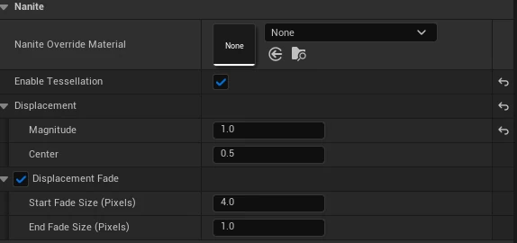
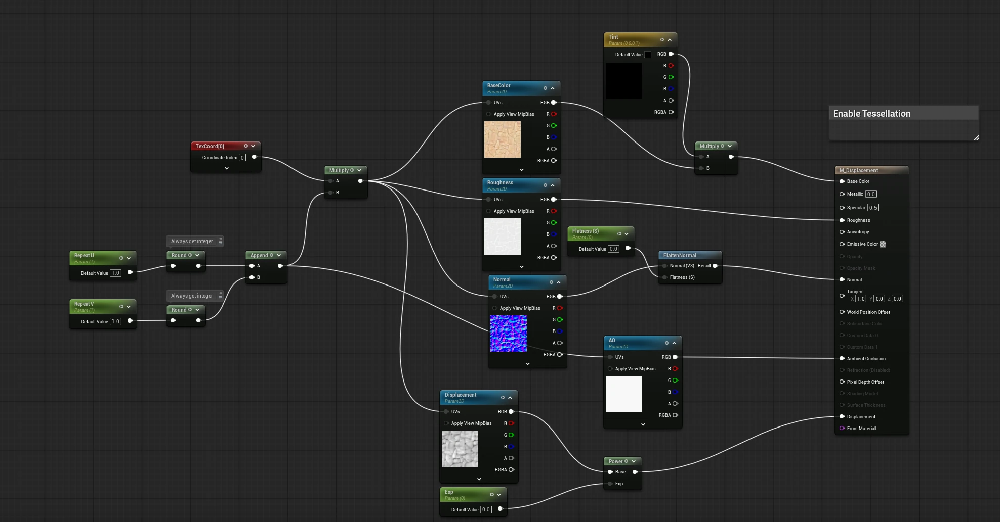
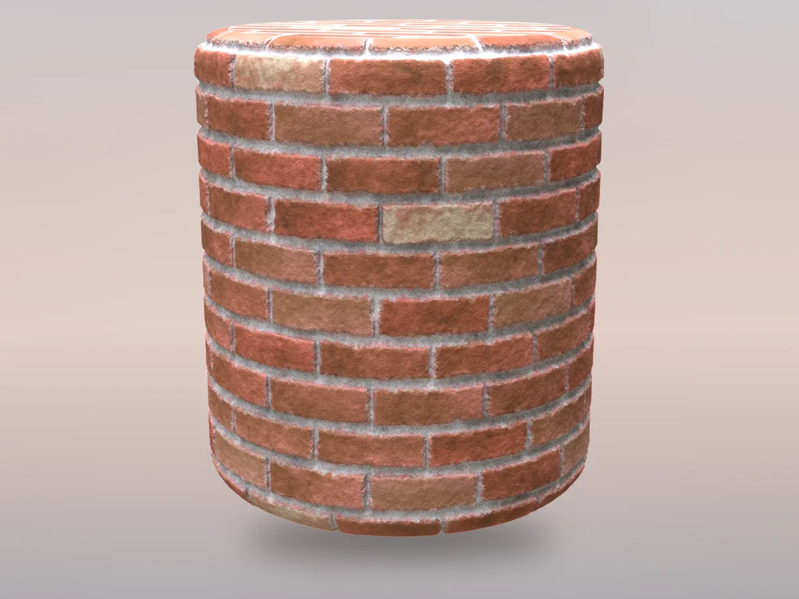
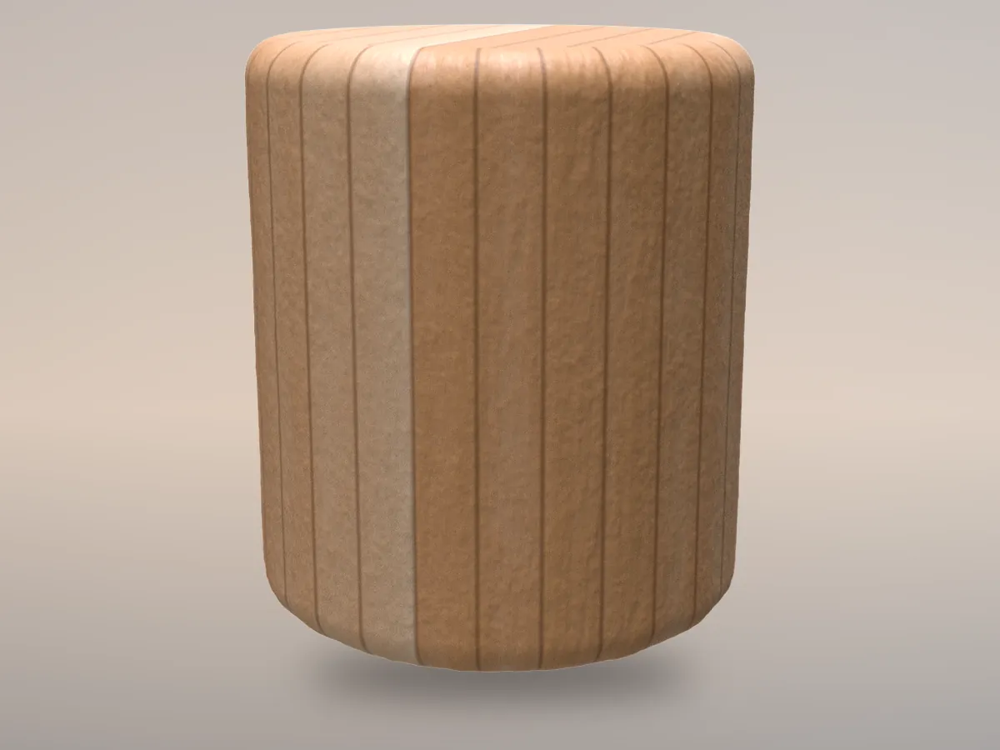
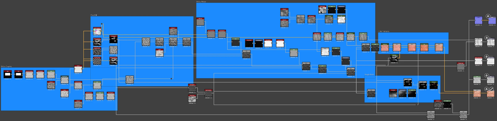
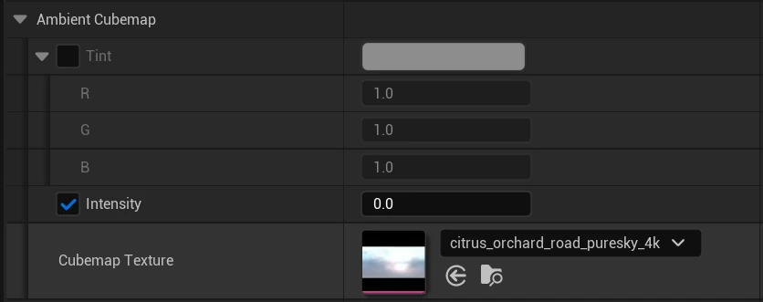

Nanite Tessellation
真的把几何推出来：Nanite mesh 在 GPU 上细分。
- 在 mesh 上开启 Nanite Support。
- 在材质的 Nanite 设定里勾选 Enable Tessellation。
- 把高度贴图接到 Displacement，用 Magnitude（Center 设 0.5）调整凸起的高度。


四个在 Substance Designer 中完全程序化制作的材质。每一个形状、颜色和磨损都由开放的参数控制，同一个节点图就能变出一整组不同的外观，再把贴图带进 Unreal Engine，用真实的几何位移呈现。
拖动一个滑杆，整个材质就会重新生成：石块数量、灰缝宽度、木板数量、木纹扭曲、水位、霜和颜色，四个材质都一格一格渲染出来。
选一个材质、选一个参数，然后拖动滑杆。每个位置都是用那个数值真实渲染出来的圆角圆柱，高度贴图也会跟著改变，所以凹凸会一起变化。

Drag the slider

Drag the slider

Drag the slider

Drag the slider
Substance Designer 的 Iray 渲染，旁边是 Base Color、Roughness、Height、Normal 和 AO 贴图。





四个材质共用一个主材质，贴图重复次数开放成 Repeat U／V，所有贴图都接进同一个节点图。为了做出真实的凹凸，我试了两种用高度贴图推动几何的方法：
真的把几何推出来：Nanite mesh 在 GPU 上细分。


直接移动顶点：做法简单，但 mesh 要够密。


建立一个球体和环境材质：Reflection Vector 接 Rotate About Axis，带动 HDRI 贴图接到 Emissive，材质设成 Unlit 和 Two Sided。

把 Sky Light 的 Source Type 改成 SLS Specified Cubemap，Cubemap 换成你选的 HDR 贴图。

加一个 Post Process Volume，设定曝光。

在同一个 Volume 里，把 HDRI 指定为 Ambient Cubemap。